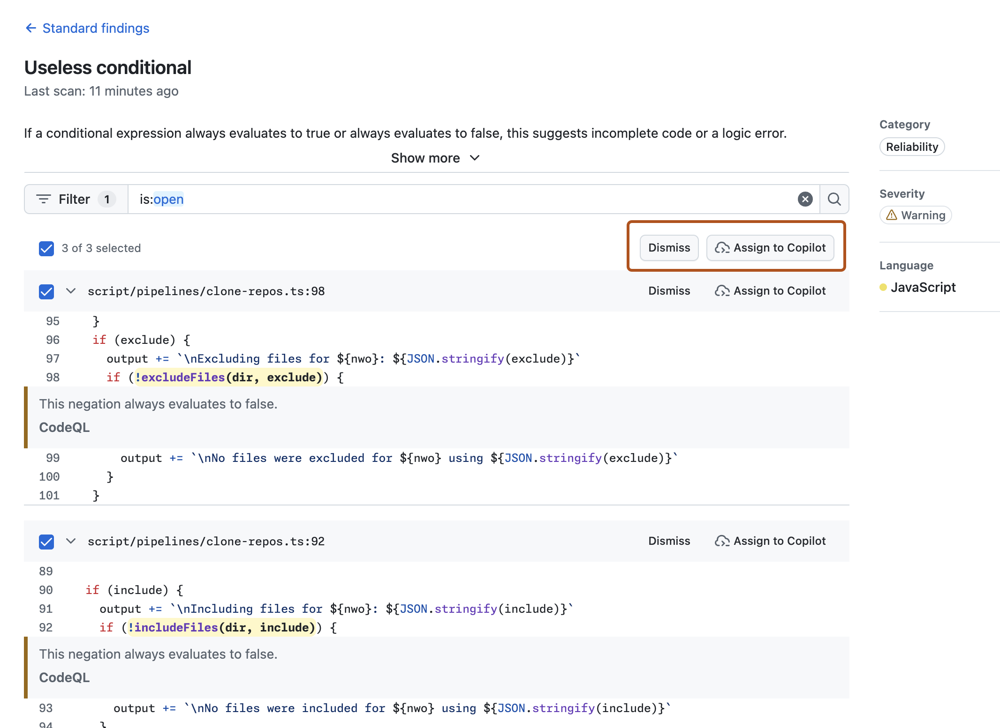

Code Quality scans your default branch and reports findings on "Code quality" pages on the Security and quality tab of your repository. It runs two types of analysis.
Standard findings: Code Quality uses CodeQL to perform a deterministic, rules-based scan of your default branch. Finding are grouped by rule and language, labeled by severity (Error, Warning, Note), and each includes a suggested autofix.
AI findings: Code Quality uses AI-powered analysis to identify quality issues in the files most recently pushed to your default branch, including issues that rule-based analysis may not detect - such as best practices, naming conventions, or design considerations.
Note
The "AI findings" page for recently changed files is currently in public preview and subject to change.
You can resolve findings individually or assign multiple findings to Copilot.
Note
Agentic Autofix for GitHub Code Quality backlog findings is currently in public preview and subject to change.
Resolving a single finding
Navigate to the Security and quality tab of your repository.
Click to expand Code quality, then click Standard findings.
Use the dashboard filters to focus on the findings most likely to affect your quality scores. For example, to see all "Error"-level findings for "Reliability", set the filter to:
is:open category:reliability severity:error
Findings are grouped by rule. Click a rule name to be taken to a detailed view of all findings for that rule.
Click Show more, then review the explanation of the rule, what the recommended fix is, supporting code examples and references.
To the right of an individual finding, click Assign to Copilot. Assigning a finding to Copilot consumes AI credits.
Review the draft pull request that Copilot opens with a fix for the finding.
When the autofix pull request is ready for review, change its status from "Draft" to "Ready for review", and wait for CI checks to pass before merging.
Alternatively, if a finding isn't relevant or actionable, click Dismiss. For example, you might dismiss a finding that is in legacy code no longer maintained, is a known exception to your team's coding standards, or is a false positive that doesn't pose a real quality risk.
To raise a maintainability or reliability score, you must resolve every finding at the highest severity level currently affecting that metric. See Metrics and scores reference.
Assigning multiple findings to Copilot
If you have many findings for a rule and want to remediate them efficiently, you can select these findings in bulk and assign them to Copilot for agentic remediation. Copilot will open a pull request with fixes for the selected findings.
For the best results, start with a single rule that has many high-severity findings. This lets you validate the quality of the autofixes on a cohesive set of changes before expanding to other rules.
Navigate to the Security and quality tab of your repository.
Click to expand Code quality, then click Standard findings.
Select the findings you want to remediate. You can select up to 25 findings per page, one page at a time.
Click Assign to Copilot.

Copilot will open a pull request with fixes for the selected findings. Review the pull request carefully before merging.
Verifying that your code quality scores have updated
After your autofix pull requests are merged, return to the "Standard findings" view to confirm that:
The number of findings has decreased.
The maintainability or reliability score has improved, if you resolved all findings at the current minimum severity level for that metric.